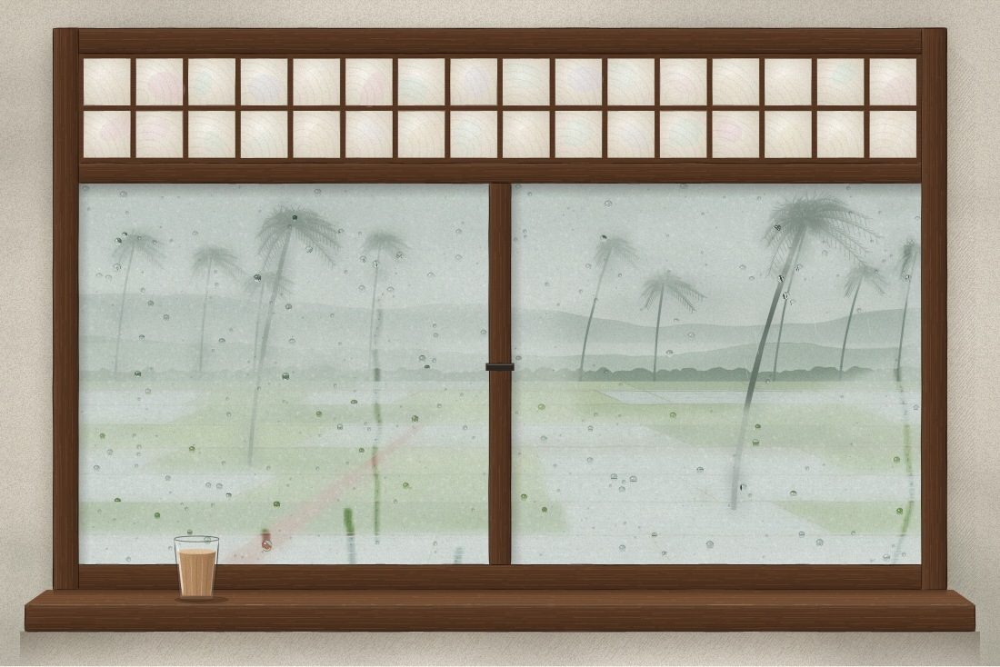

Balcão, Siolim
A note on your stay
Thank you for choosing to stay with us from 14 to 18 October 2026. This note has what you need before you arrive. It works offline, prints cleanly, and you can check it has not been changed.
The door is open
Arrive any time after 2 pm.
Your room
The veranda room faces the paddy. In the monsoon the rain is loud on the roof, and we think that is the best part.

Your stay
| Item | Amount |
|---|---|
| Veranda room, 4 nights | ₹18,400 |
| Breakfast for two | ₹2,400 |
| GST at 12% | ₹2,496 |
| Total | ₹23,296 |
In our languages
तुमकां येवकार. आमचें घर तुमचें घर.
ನಿಮಗೆ ಸ್ವಾಗತ. ನಮ್ಮ ಮನೆ ನಿಮ್ಮ ಮನೆ.
Getting here
From Thivim station it is a 25-minute drive. The route is on OpenStreetMap; we will send a taxi if you ask.